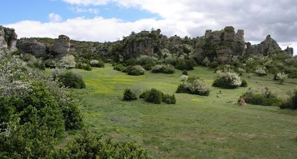

Causse du
Larzac


⟹ Steppe & Patrimoine templier ⟸
Le Causse du Larzac est le plus vaste et le plus méridional des Grands Causses : un plateau calcaire karstique d'environ 1 000 km², qui s'étend entre Millau (Aveyron) et Lodève (Hérault), à une altitude moyenne de 800 mètres, culminant à la Serre de la Lavande (926 m) et au Puech de Cougouille (912 m).
Ce paysage de steppe, unique en Europe, a été entièrement façonné par plusieurs siècles de pastoralisme. Il est inscrit depuis 2011 au patrimoine mondial de l'UNESCO au titre des « Causses et Cévennes, paysage culturel de l'agro-pastoralisme méditerranéen », reconnaissance de l'interaction millénaire entre l'homme et la nature qui a modelé ce plateau.
Le Larzac est également connu pour avoir été, dans les années 1970, le théâtre d'un célèbre mouvement de désobéissance civile contre l'extension d'un camp militaire — la lutte du Larzac — qui a marqué durablement l'identité du plateau.

Le plateau repose sur un vaste socle de calcaire jurassique, relativement nivelé par l'érosion et séparé des massifs voisins par des rivières coulant au fond de gorges profondes — la Dourbie au nord-est, le Tarn au nord-ouest. Les sols y sont le plus souvent superficiels et fortement drainants, sauf dans les dolines, dépressions qui concentrent des sols plus profonds et décarbonatés.
L'infiltration de l'eau dans ce milieu karstique a sculpté avens, grottes, galeries et rivières souterraines, ainsi que des rochers ruiniformes spectaculaires, dont le plus emblématique est le Rajal del Gorp. Ce relief karstique donne au Larzac son caractère aride et son apparence de « Far West à la française ».
L'eau de surface reste rare malgré des précipitations abondantes au printemps et à l'automne : la source du Durzon, à Nant, dont l'eau cristalline reste à 10°C toute l'année, en est l'une des rares résurgences visibles.
Paysage de steppe : les pelouses sèches du Larzac, entretenues par des siècles de pâturage ovin, abritent une flore steppique rare en Europe.
Grande faune : chevreuils et cerfs élaphes traversent régulièrement le plateau, notamment lors de leurs migrations depuis les Cévennes vers les vallées environnantes.
Petite faune et rapaces : lapins, blaireaux, rats musqués et faisans partagent le plateau sous le regard de faucons et de buses qui survolent les grands espaces.
Élevage ovin : le Larzac reste une terre d'élevage de brebis, dont le lait alimente notamment la production du Roquefort, pilier de l'économie locale.
Accès : le plateau se rejoint facilement par l'A75, avec des points d'entrée à La Cavalerie, Saint-Eulalie-de-Cernon ou Nant.
Patrimoine mondial : le Causse du Larzac fait partie du bien UNESCO « Causses et Cévennes », inscrit en 2011.
Meilleure période : le printemps (avril à juin) est idéal pour découvrir la floraison des pelouses sèches ; l'automne offre des lumières et une fréquentation plus calmes.